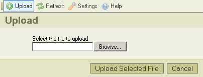

Lataa palvelimelle -nappi* ty繹kalurivill瓣 avaa "Lataa palvelimelle" -ruudun, jonka avulla lis瓣t瓣瓣n uusia tiedostoja valittuun kansioon. T瓣ss瓣 kuvaruutukaappaus:

Napsauta "Peru"-nappia sulkeaksesi ruudun, tai napsauta uudelleen "Lataa palvelimelle"-nappia ty繹kalurivill瓣.
* "Lataa palvelimelle" -termi tarkoittaa tiedoston siirt瓣mist瓣 paikalliselta tietokoneelta palvelimelle.
Voit n瓣hd瓣 seuraavia viestej瓣 lataustapahtuman aikana:
Viesti tarkoittaa, ett瓣 samanniminen kuin lataamasi tiedosto on jo tallennettu hakemistoon. Ristiriidan est瓣miseksi tiedostonimen per瓣瓣n lis瓣t瓣瓣n juokseva numero "(1)".
Palvelin ei hyv瓣ksy ladattavaa tiedostoa. Yleens瓣 kysymys on siit瓣, ett瓣 CKFinder on asetettu est瓣m瓣瓣n tiettyjen tiedostotyyppien lataaminen. Ne tunnistetaan tiedostotarkenteen perusteella. Lataaminen estet瓣瓣n tietoturvasyist瓣. Vaihtoehtoisesti tiedostokoko voi olla liian suuri. Siin瓣 tapauksessa palvelin on konfiguroitava hyv瓣ksym瓣瓣n isompia tiedostoja.
Ladattava tiedosto sis瓣lt瓣瓣 HTML-koodia. Tietoturvasyist瓣 vain m瓣瓣r瓣tyill瓣 tiedostotarkenteilla varustetut tiedostot saavat sis瓣lt瓣瓣 HTML-koodia. Ota yhteytt瓣 p瓣瓣k瓣ytt瓣j瓣瓣n selvitt瓣瓣ksesi, mitk瓣 ovat hyv瓣ksytt瓣j瓣 tiedostotyyppej瓣, ja mik瓣 on niiden suurin sallittu koko.